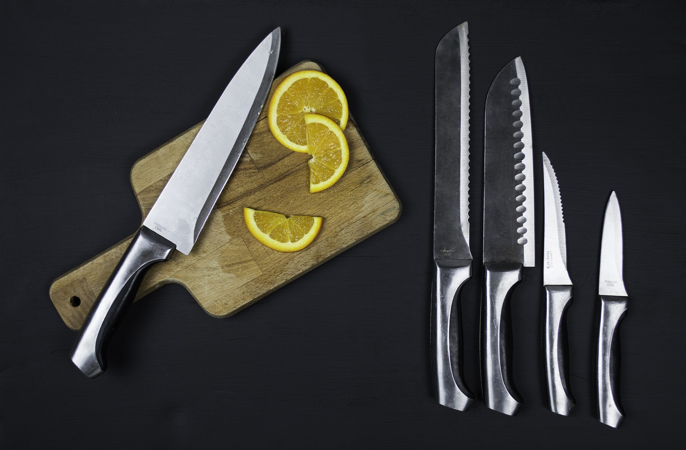

Tipos de cortes en Mexico.
1.- Algunos tipos de cortes usados en mexico son:


Tipos de cuchillos.
1.-Todos tenemos un cuchillo para cocinar, es uno de los utensilios de cocina que necesita más cuidados y su uso muchas veces es erróneo dentro de nuestras encimeras.
2.-Desde el cuchillo jamonero, hasta el cuchillo deshuesador, pasando por el hacha de cocina y el cuchillo santoku, vamos a analizar cada cuchillo de cocina para lograr que, como buen cocinero, sepamos cuales son los mejores para hacer cortes precisos y su función al preparar tus alimentos.
3.-¿Qué cuchillos de cocina deberías tener en casa como básicos?
- Cuchillo de Chef o cuchillo cocinero: Un buen cuchillo de chef es el cuchillo con el que puedes cortar la mayoría de las cosas. Este es nuestro favorito para recomendarte y siempre será ideal para invertir en él.
- Cuchillo mondador o cuchillo para pelar: El segundo cuchillo del que hablaremos es de un pequeño cuchillo mondador o para pelar que además de pelar como su nombre lo indica, sirve para muchas cosas más, como hacer cortes finos de frutas y verduras.
- Cuchillo para pan o cuchillos dentado: Un cuchillo dentado es el número tres de los imprescindibles. Se utiliza principalmente para pan u otras cosas que no se pueden cortar con demasiada presión sino que deben ser serruchadas.
- Hacha de cocina: A diferencia de un cuchillo de chef ordinario, la forma del hacha de cocina es rectangular y tiene una hoja sólida y robusta con una longitud de unos 15 cm, perfecta para cortar costillas, chuletas y animales más pequeños como corderos y conejos.
- Cuchillo jamonero: Un cuchillo jamonero es un cuchillo de hoja fina y extralarga que se utiliza para cortar lonchas finas y uniformes de jamón, rosbif, falda y otras piezas de carne de gran tamaño.
- Cuchillo para salmón o brisket: Un cuchillo de salmón largo y delgado es imprescindible para los amantes del pescado sobre todo cuando en frío se va a cortar en rodajas delgadas y muy muy finas.